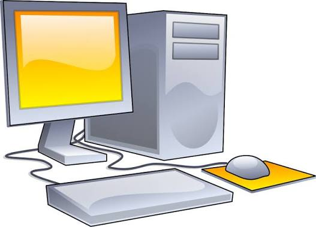

Benvenuto nella Mini Wikipedia di Informatica, una piccola enciclopedia dedicata al computer e alle sue periferiche.
In questa pagina trovi un'introduzione ai tre argomenti. Clicca sui collegamenti per leggere gli articoli completi.

Il computer è un dispositivo elettronico che permette di elaborare e memorizzare dati. Possiamo utilizzarlo per studiare, lavorare, navigare su Internet e giocare.Per interagire con il computer possiamo usare il mouse e la tastiera.
Il mouse permette di controllare il puntatore sullo schermo del computer. Viene utilizzato per selezionare elementi, aprire collegamenti e scorrere le pagine.
Leggi l'articolo sul mouse
 La tastiera permette di inserire lettere, numeri e simboli nel computer.Si utilizza per scrivere testi e inviare comandi,spesso insieme al mouse.
Leggi l'articolo sulla tastiera
La tastiera permette di inserire lettere, numeri e simboli nel computer.Si utilizza per scrivere testi e inviare comandi,spesso insieme al mouse.
Leggi l'articolo sulla tastiera